Filtering
Katharina Hembach
June 26, 2020
Last updated: 2020-06-26
Checks: 7 0
Knit directory: neural_scRNAseq/
This reproducible R Markdown analysis was created with workflowr (version 1.6.2). The Checks tab describes the reproducibility checks that were applied when the results were created. The Past versions tab lists the development history.
Great! Since the R Markdown file has been committed to the Git repository, you know the exact version of the code that produced these results.
Great job! The global environment was empty. Objects defined in the global environment can affect the analysis in your R Markdown file in unknown ways. For reproduciblity it’s best to always run the code in an empty environment.
The command set.seed(20200522) was run prior to running the code in the R Markdown file. Setting a seed ensures that any results that rely on randomness, e.g. subsampling or permutations, are reproducible.
Great job! Recording the operating system, R version, and package versions is critical for reproducibility.
Nice! There were no cached chunks for this analysis, so you can be confident that you successfully produced the results during this run.
Great job! Using relative paths to the files within your workflowr project makes it easier to run your code on other machines.
Great! You are using Git for version control. Tracking code development and connecting the code version to the results is critical for reproducibility.
The results in this page were generated with repository version afe57cc. See the Past versions tab to see a history of the changes made to the R Markdown and HTML files.
Note that you need to be careful to ensure that all relevant files for the analysis have been committed to Git prior to generating the results (you can use wflow_publish or wflow_git_commit). workflowr only checks the R Markdown file, but you know if there are other scripts or data files that it depends on. Below is the status of the Git repository when the results were generated:
Ignored files:
Ignored: .DS_Store
Ignored: .Rhistory
Ignored: .Rproj.user/
Ignored: ._.DS_Store
Ignored: ._MA.pdf
Ignored: ._MA2.pdf
Ignored: ._MA_plots.pdf
Ignored: ._Rplots.pdf
Ignored: .__workflowr.yml
Ignored: ._hm.pdf
Ignored: ._neural_scRNAseq.Rproj
Ignored: ._sample5_MA_2nd_pop.pdf
Ignored: ._sample5_QC_2nd_pop.pdf
Ignored: ._tmp.pdf
Ignored: ._tmp_detected.pdf
Ignored: ._tmp_manual_discard.pdf
Ignored: ._tmp_manual_discard1.pdf
Ignored: ._tmp_manual_discard_all.pdf
Ignored: ._tmp_manual_discard_all1.pdf
Ignored: analysis/.DS_Store
Ignored: analysis/.Rhistory
Ignored: analysis/._.DS_Store
Ignored: analysis/._01-preprocessing.Rmd
Ignored: analysis/._01-preprocessing.html
Ignored: analysis/._02.1-SampleQC.Rmd
Ignored: analysis/._03-filtering.Rmd
Ignored: analysis/._04-clustering.Rmd
Ignored: analysis/._04-clustering.knit.md
Ignored: analysis/._04.1-cell_cycle.Rmd
Ignored: analysis/._05-annotation.Rmd
Ignored: analysis/.__site.yml
Ignored: analysis/._additional_filtering.Rmd
Ignored: analysis/._additional_filtering_clustering.Rmd
Ignored: analysis/._index.Rmd
Ignored: analysis/01-preprocessing_cache/
Ignored: analysis/02-1-SampleQC_cache/
Ignored: analysis/02-quality_control_cache/
Ignored: analysis/02.1-SampleQC_cache/
Ignored: analysis/04-clustering_cache/
Ignored: analysis/04.1-cell_cycle_cache/
Ignored: analysis/05-annotation_cache/
Ignored: analysis/additional_filtering_cache/
Ignored: analysis/additional_filtering_clustering_cache/
Ignored: analysis/figure/
Ignored: analysis/sample5_QC_cache/
Ignored: data/.DS_Store
Ignored: data/._.DS_Store
Ignored: data/._.smbdeleteAAA17ed8b4b
Ignored: data/._metadata.csv
Ignored: data/data_sushi/
Ignored: data/filtered_feature_matrices/
Ignored: output/.DS_Store
Ignored: output/._.DS_Store
Ignored: output/additional_filtering.rds
Ignored: output/figures/
Ignored: output/sce_01_preprocessing.rds
Ignored: output/sce_02_quality_control.rds
Ignored: output/sce_03_filtering.rds
Ignored: output/sce_preprocessing.rds
Ignored: output/so_04_1_cell_cycle.rds
Ignored: output/so_04_clustering.rds
Ignored: output/so_additional_filtering_clustering.rds
Untracked files:
Untracked: MA.pdf
Untracked: MA2.pdf
Untracked: MA_plots.pdf
Untracked: Rplots.pdf
Untracked: analysis/additional_filtering.Rmd
Untracked: analysis/additional_filtering_clustering.Rmd
Untracked: analysis/sample5_QC.Rmd
Untracked: analysis/tabsets.Rmd
Untracked: hm.pdf
Untracked: sample5_MA_2nd_pop.pdf
Untracked: sample5_QC_2nd_pop.pdf
Untracked: scripts/
Untracked: tmp.pdf
Untracked: tmp_detected.pdf
Untracked: tmp_manual_discard.pdf
Untracked: tmp_manual_discard1.pdf
Untracked: tmp_manual_discard_all.pdf
Untracked: tmp_manual_discard_all1.pdf
Unstaged changes:
Modified: analysis/_site.yml
Note that any generated files, e.g. HTML, png, CSS, etc., are not included in this status report because it is ok for generated content to have uncommitted changes.
These are the previous versions of the repository in which changes were made to the R Markdown (analysis/03-filtering.Rmd) and HTML (docs/03-filtering.html) files. If you’ve configured a remote Git repository (see ?wflow_git_remote), click on the hyperlinks in the table below to view the files as they were in that past version.
| File | Version | Author | Date | Message |
|---|---|---|---|---|
| Rmd | afe57cc | khembach | 2020-06-26 | additional filtering of sample 5 and 6 |
| html | 1f41de5 | khembach | 2020-06-08 | Build site. |
| html | 6d822af | khembach | 2020-05-28 | Build site. |
| Rmd | a7ced59 | khembach | 2020-05-28 | cell and gene filtering |
Load packages
library(scater)
library(LSD)
library(dplyr)
library(edgeR)
library(ggrepel)Load data
sce <- readRDS(file.path("output", "sce_02_quality_control.rds"))Identification of outlier cells
Based on the QC metrics, we now identify outlier cells:
cols <- c("sum", "detected", "subsets_Mt_percent")
log <- c(TRUE, TRUE, FALSE)
type <- c("both", "both", "higher")
drop_cols <- paste0(cols, "_drop")
for (i in seq_along(cols))
colData(sce)[[drop_cols[i]]] <- isOutlier(sce[[cols[i]]],
nmads = 3, type = type[i], log = log[i], batch = sce$sample_id)
# Overlap of outlier cells from two metrics
sapply(drop_cols, function(i)
sapply(drop_cols, function(j)
sum(sce[[i]] & sce[[j]]))) sum_drop detected_drop subsets_Mt_percent_drop
sum_drop 2499 2289 614
detected_drop 2289 2740 809
subsets_Mt_percent_drop 614 809 2611colData(sce)$discard <- rowSums(data.frame(colData(sce)[,drop_cols])) > 0
table(colData(sce)$discard)
FALSE TRUE
43846 4735 ## Plot the metrics and highlight the discarded cells
plotColData(sce, x = "sample_id", y = "sum", colour_by = "discard") +
scale_y_log10()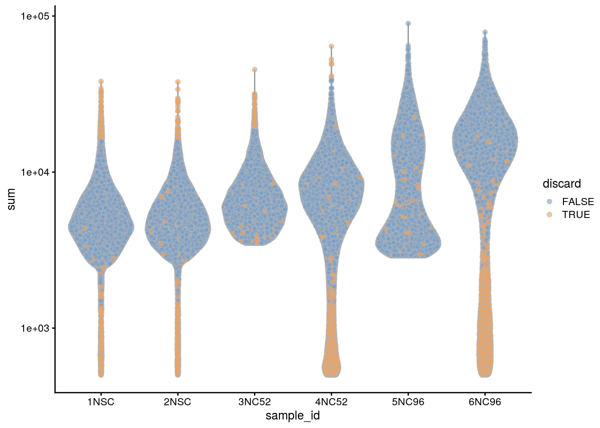
plotColData(sce, x = "sample_id", y = "detected", colour_by = "discard") +
scale_y_log10()
plotColData(sce, x = "sample_id", y = "subsets_Mt_percent",
colour_by = "discard")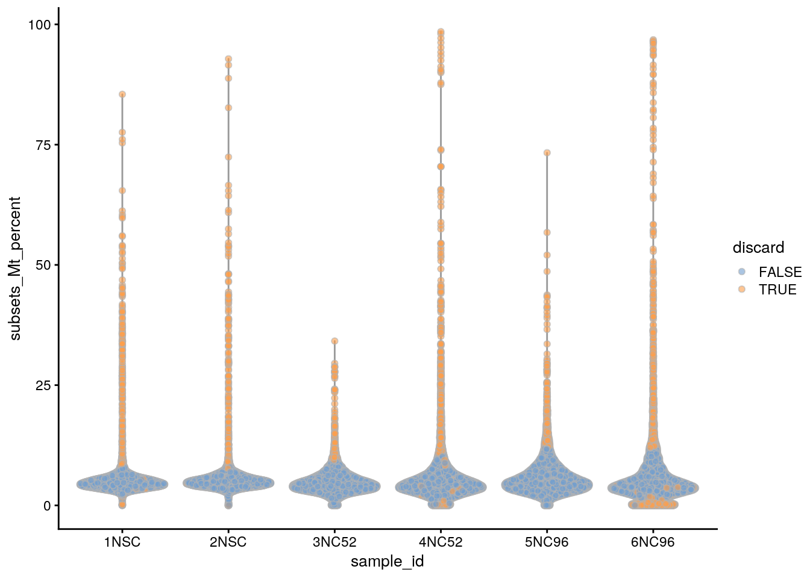
MA plot of the two populations
We think that the second cell population in sample 5 with the lower number of UMIs and detected genes consists of damaged cells caused by the dissociation. Sample 5 and 6 are technical replicates and we thus expect similar distributions of the QC metrics. We want to know if there are any genes enriched in the second cell population or if we can safely remove the cells?
To check if we would discarded an specific cell identity with out stringent filtering, we compare the gene expression in the two cell populations (excluding the outlier cells as defined above). If the second cell population is enriched for a specific cell identity, the corresponding marker genes will have high log2FC in the MA plot. Mitochondrial genes are in blue.
for (i in c("5NC96", "6NC96")) {
cat("### ", i, "\n")
## all retained cells
part <- sce[,colData(sce)$sample_id == i & colData(sce)$discard == FALSE]
## second population: cells with less than 7000 detected genes in sample 5
colData(part)$second_pop <- (colData(part)$sum < 7000 |
colData(part)$detected < 3000)
plotColData(part, x = "sample_id", y = "sum", colour_by = "second_pop") +
scale_y_log10()
plotColData(part, x = "sample_id", y = "detected", colour_by = "second_pop") +
scale_y_log10()
lost <- calculateAverage(counts(part)[,colData(part)$second_pop])
kept <- calculateAverage(counts(part)[,!colData(part)$second_pop])
logged <- cpm(cbind(lost, kept), log=TRUE, prior.count=2)
logFC <- logged[,1] - logged[,2]
abundance <- rowMeans(logged)
label <- rep("", length(logFC))
top <- order(logFC, decreasing = TRUE)[1:20]
label[top] <- rowData(sce)$symbol[top]
df <- data.frame(abundance = abundance, logFC = logFC, label = label)
mito <- grep("MT-", rownames(sce), value = TRUE)
p <- ggplot(df, aes(x = abundance, y = logFC, label = label)) +
geom_point(size = 2.5) +
geom_point(data = df[mito,], color = "dodgerblue", size = 2.5) +
xlab("Average count") + ylab("logFC (lost/kept)") +
theme_bw(base_size = 16) +
geom_text_repel()
print(p)
cat("\n\n")
}6NC96
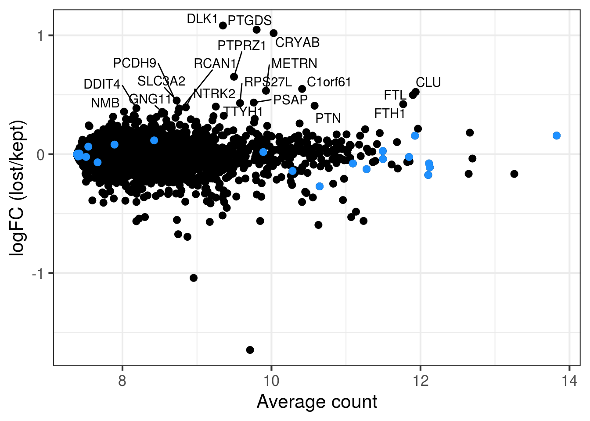
We decided to additionally filter the cells in sample 5 and 6.
## filter the cells with less than 5000 UMIs in sample 5 and 6
colData(sce) %>% data.frame() %>%
filter(sample_id %in% c("5NC96", "6NC96")) %>%
group_by(sample_id, discard) %>%
summarise(below_cutoff = sum(sum < 5000))# A tibble: 4 x 3
# Groups: sample_id [2]
sample_id discard below_cutoff
<fct> <lgl> <int>
1 5NC96 FALSE 2526
2 5NC96 TRUE 160
3 6NC96 FALSE 134
4 6NC96 TRUE 1221colData(sce)$manual_discard_sum <- colData(sce)$sum < 5000 &
colData(sce)$sample_id %in% c("5NC96", "6NC96")
## filter the cells with less than 3000 detected genes in sample 5 and 6
colData(sce) %>% data.frame() %>%
filter(sample_id %in% c("5NC96", "6NC96")) %>%
group_by(sample_id, discard) %>%
summarise(below_cutoff = sum(detected < 2500) )# A tibble: 4 x 3
# Groups: sample_id [2]
sample_id discard below_cutoff
<fct> <lgl> <int>
1 5NC96 FALSE 2561
2 5NC96 TRUE 202
3 6NC96 FALSE 183
4 6NC96 TRUE 1259colData(sce)$manual_discard_detected <- colData(sce)$detected < 2500 &
colData(sce)$sample_id %in% c("5NC96", "6NC96")
## highlight all manually discarded cells
colData(sce)$manual_discard <- colData(sce)$manual_discard_sum |
colData(sce)$manual_discard_detected
plotColData(sce, x = "sample_id", y = "sum", colour_by = "manual_discard") +
scale_y_log10()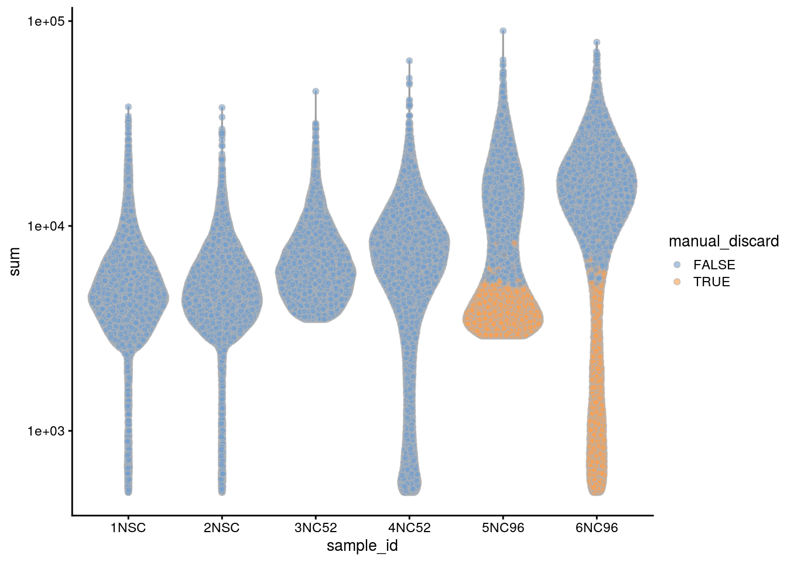
plotColData(sce, x = "sample_id", y = "detected", colour_by = "manual_discard") +
scale_y_log10()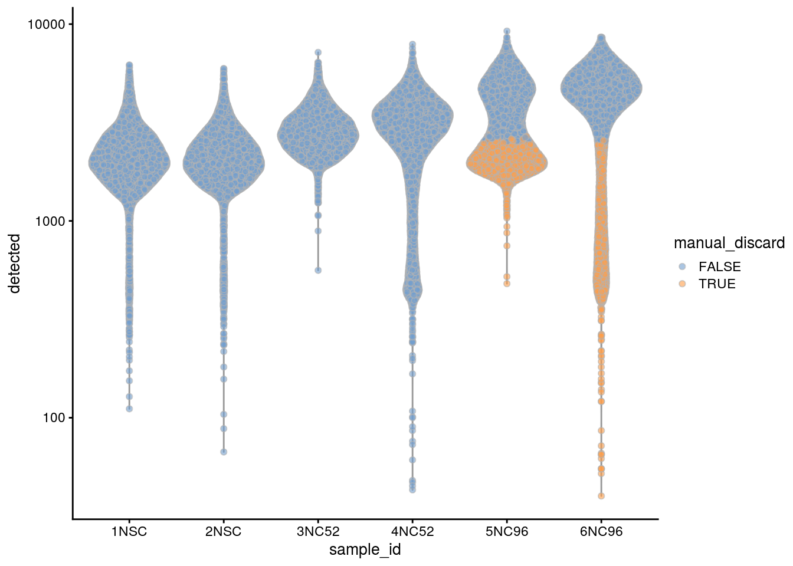
## highlight all discarded cells
colData(sce)$discard <- colData(sce)$manual_discard |
colData(sce)$discard
plotColData(sce, x = "sample_id", y = "detected", colour_by = "discard") +
scale_y_log10()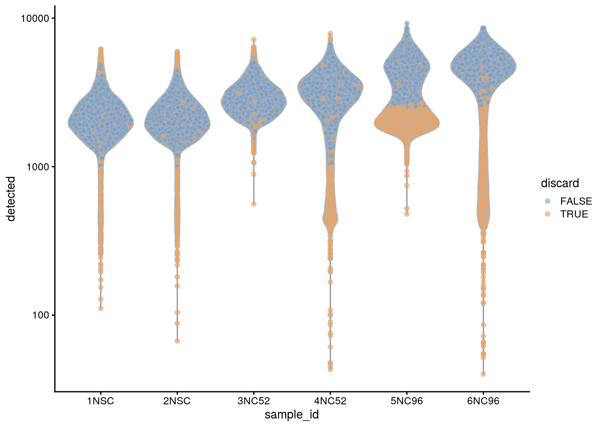
plotColData(sce, x = "sample_id", y = "sum", colour_by = "discard") +
scale_y_log10()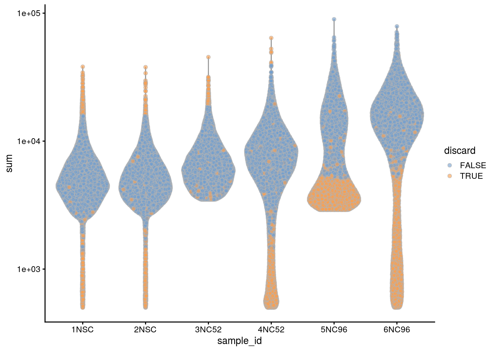
plotColData(sce, x = "sample_id", y = "subsets_Mt_percent",
colour_by = "discard")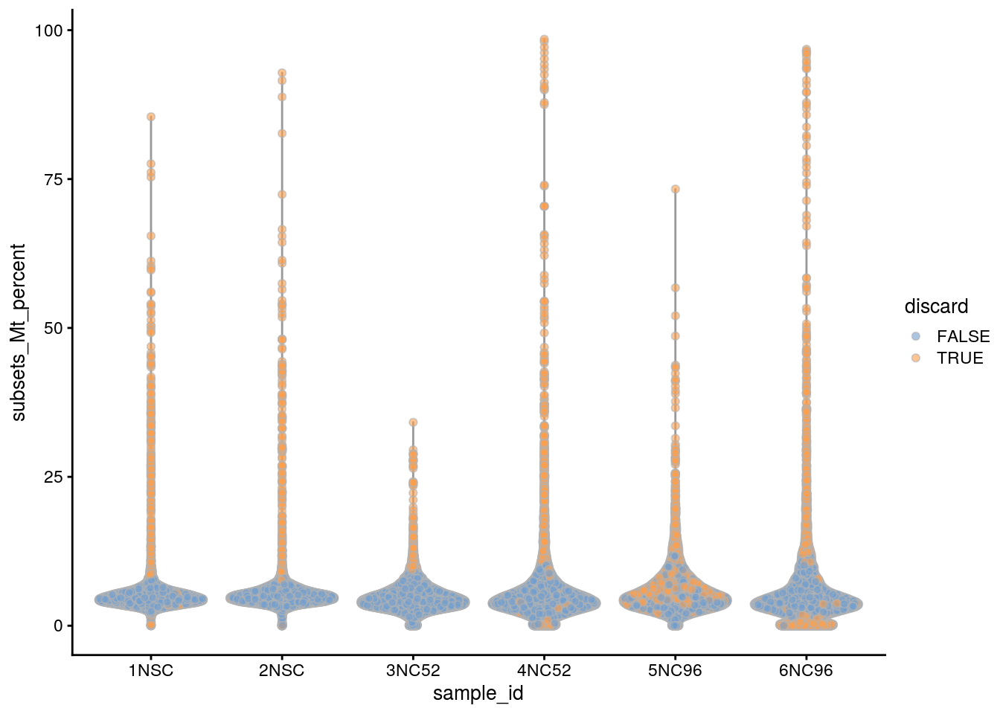
Plot the library size against the number of detected genes before and after filtering.
cd <- colData(sce)
layout(matrix(1:12, nrow = 3, byrow = TRUE))
for (i in levels(sce$sample_id)) {
tmp <- cd[cd$sample_id == i,]
heatscatter(tmp$sum, tmp$detected, log = "xy",
main = paste0(i, "-unfiltered"), xlab = "total counts",
ylab = "detected genes")
heatscatter(tmp$sum[!tmp$discard], tmp$detected[!tmp$discard],
log = "xy", main = paste0(i, "-filtered"), xlab = "total counts",
ylab = "detected genes")
}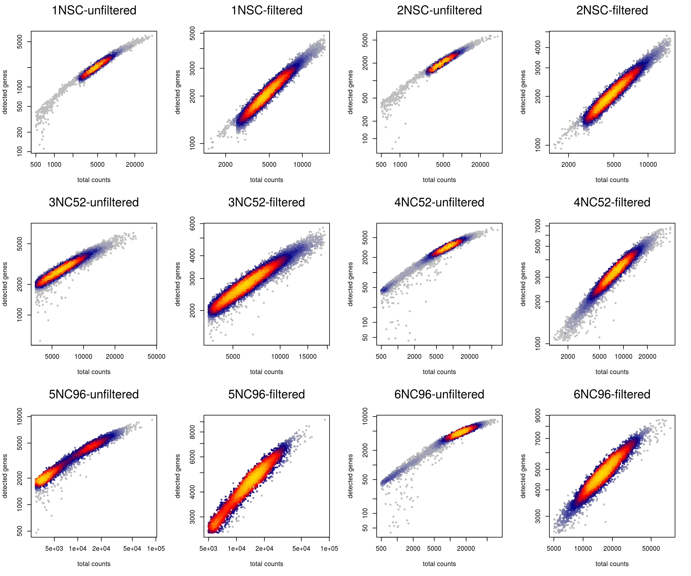
MA plot of all discarded over retained cells
MA plot of all discarded cells (outlier cells or cells in second population in sample 5) over the retained cells. Mitochondrial genes in blue.
lost <- calculateAverage(counts(sce)[,colData(sce)$discard])
kept <- calculateAverage(counts(sce)[,!colData(sce)$discard])
logged <- cpm(cbind(lost, kept), log=TRUE, prior.count=2)
logFC <- logged[,1] - logged[,2]
abundance <- rowMeans(logged)
## only label genes with high logFC
label <- rep("", length(logFC))
top <- order(logFC, decreasing = TRUE)[1:20]
label[top] <- rowData(sce)$symbol[top]
df <- data.frame(abundance = abundance, logFC = logFC, label = label)
mito <- grep("MT-", rownames(sce), value = TRUE)
p <- ggplot(df, aes(x = abundance, y = logFC, label = label)) +
geom_point(size = 2.5) +
geom_point(data = df[mito,], color = "dodgerblue", size = 2.5) +
xlab("Average count") + ylab("logFC (lost/kept)") +
theme_bw(base_size = 16) +
geom_text_repel()
print(p)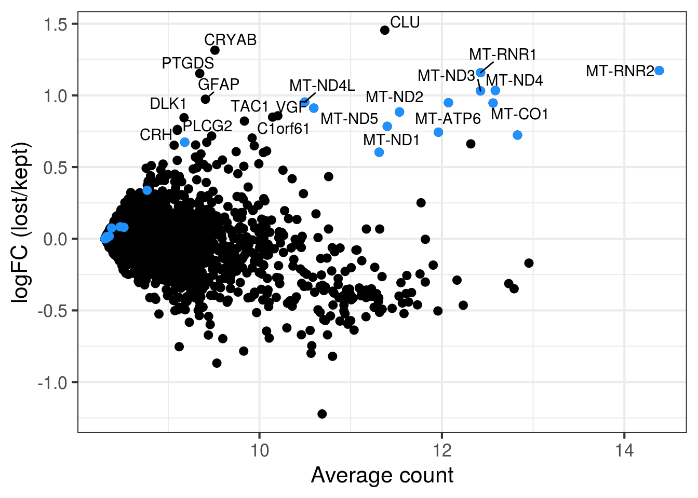
MA plot per sample
for (s in levels(colData(sce)$sample_id)) {
cat("#### ", s, "\n")
part <- sce[,colData(sce)$sample_id == s]
lost <- calculateAverage(counts(part)[,colData(part)$discard])
kept <- calculateAverage(counts(part)[,!colData(part)$discard])
logged <- cpm(cbind(lost, kept), log=TRUE, prior.count=2)
logFC <- logged[,1] - logged[,2]
abundance <- rowMeans(logged)
## only label genes with high logFC
label <- rep("", length(logFC))
top <- order(logFC, decreasing = TRUE)[1:20]
label[top] <- rowData(part)$symbol[top]
df <- data.frame(abundance = abundance, logFC = logFC, label = label)
mito <- grep("MT-", rownames(part), value = TRUE)
p <- ggplot(df, aes(x = abundance, y = logFC, label = label)) +
geom_point(size = 2.5) +
geom_point(data = df[mito,], color = "dodgerblue", size = 2.5) +
xlab("Average count") + ylab("logFC (lost/kept)") +
theme_bw(base_size = 16) +
geom_text_repel()
print(p)
cat("\n\n")
}1NSC
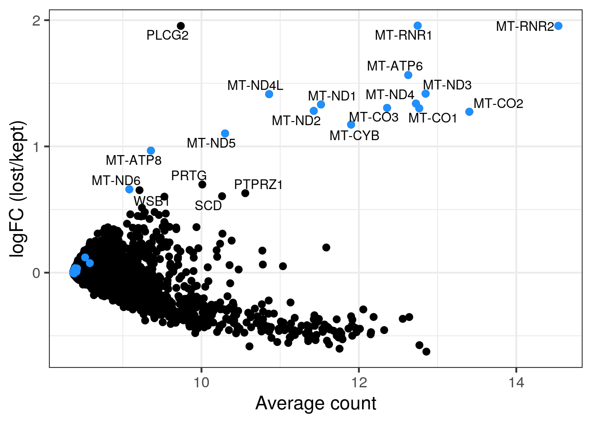
2NSC
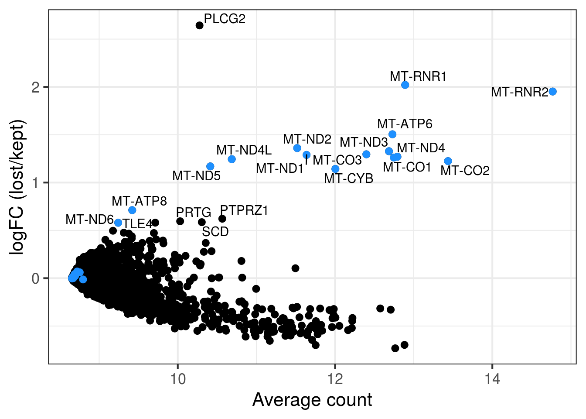
3NC52
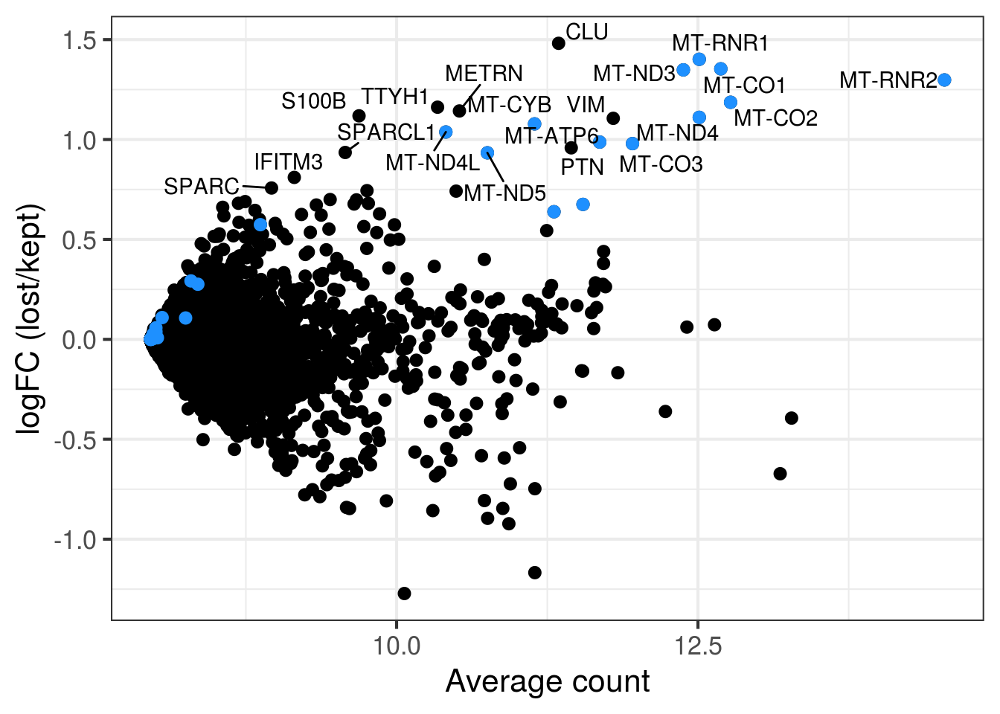
4NC52
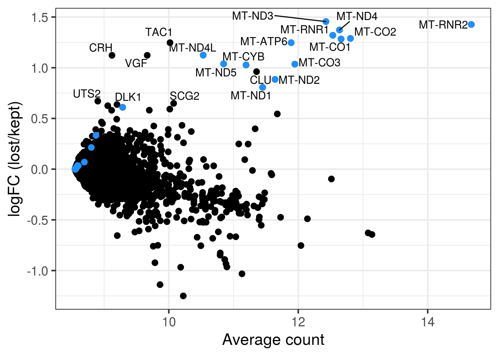
5NC96
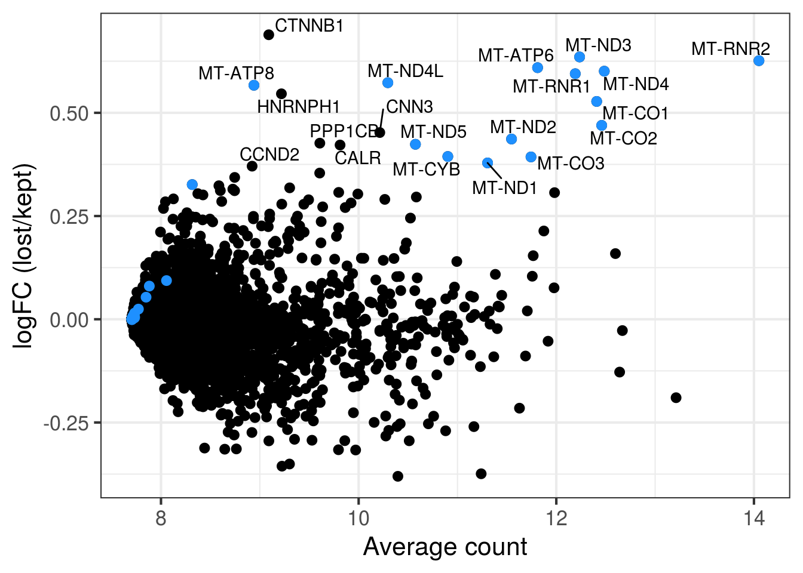
6NC96
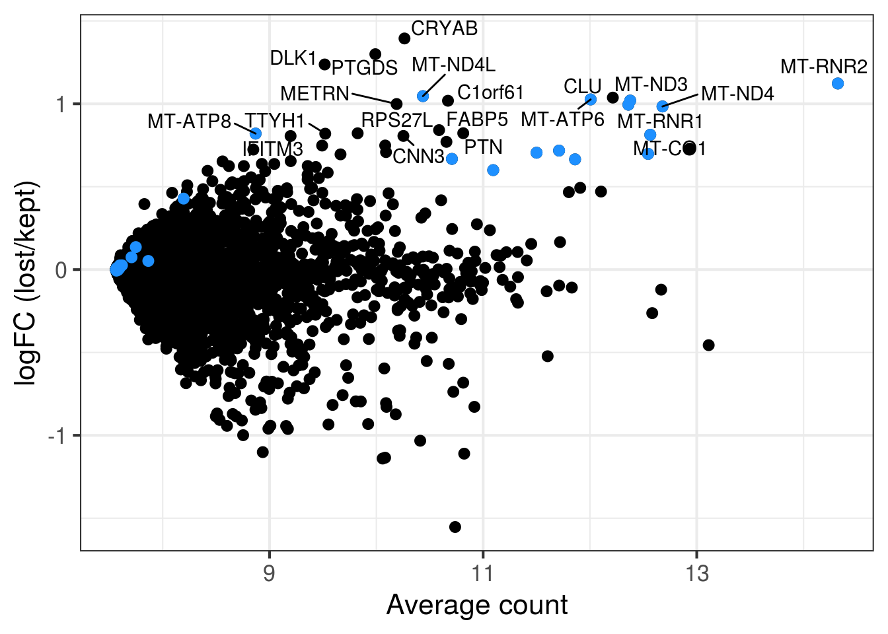
Removal of outlier cells
We remove the outlier cells and filter the genes:
## summary of the kept cells
nr <- table(cd$sample_id)
nr_fil <- table(cd$sample_id[!cd$discard])
print(rbind(
unfiltered = nr, filtered = nr_fil,
"%" = round(nr_fil / nr * 100, digits = 0))) 1NSC 2NSC 3NC52 4NC52 5NC96 6NC96
unfiltered 8893 8854 9109 8865 6571 6289
filtered 8331 8408 8687 7438 3538 4595
% 94 95 95 84 54 73## discard the outlier cells
dim(sce)[1] 19375 48581sce <- sce[,!cd$discard]
dim(sce)[1] 19375 40997## we filter genes and require > 1 count in at least 20 cells
sce <- sce[rowSums(counts(sce) > 1) >= 20, ]
dim(sce)[1] 13254 40997Save data to RDS
saveRDS(sce, file.path("output", "sce_03_filtering.rds"))
sessionInfo()R version 4.0.0 (2020-04-24)
Platform: x86_64-pc-linux-gnu (64-bit)
Running under: Ubuntu 16.04.6 LTS
Matrix products: default
BLAS: /usr/local/R/R-4.0.0/lib/libRblas.so
LAPACK: /usr/local/R/R-4.0.0/lib/libRlapack.so
locale:
[1] LC_CTYPE=en_US.UTF-8 LC_NUMERIC=C
[3] LC_TIME=en_US.UTF-8 LC_COLLATE=en_US.UTF-8
[5] LC_MONETARY=en_US.UTF-8 LC_MESSAGES=en_US.UTF-8
[7] LC_PAPER=en_US.UTF-8 LC_NAME=C
[9] LC_ADDRESS=C LC_TELEPHONE=C
[11] LC_MEASUREMENT=en_US.UTF-8 LC_IDENTIFICATION=C
attached base packages:
[1] parallel stats4 stats graphics grDevices utils datasets
[8] methods base
other attached packages:
[1] HDF5Array_1.16.0 rhdf5_2.32.0
[3] ggrepel_0.8.2 edgeR_3.30.0
[5] limma_3.44.1 dplyr_0.8.5
[7] LSD_4.0-0 scater_1.16.0
[9] ggplot2_3.3.0 SingleCellExperiment_1.10.1
[11] SummarizedExperiment_1.18.1 DelayedArray_0.14.0
[13] matrixStats_0.56.0 Biobase_2.48.0
[15] GenomicRanges_1.40.0 GenomeInfoDb_1.24.0
[17] IRanges_2.22.2 S4Vectors_0.26.1
[19] BiocGenerics_0.34.0 workflowr_1.6.2
loaded via a namespace (and not attached):
[1] viridis_0.5.1 BiocSingular_1.4.0
[3] viridisLite_0.3.0 DelayedMatrixStats_1.10.0
[5] assertthat_0.2.1 GenomeInfoDbData_1.2.3
[7] vipor_0.4.5 yaml_2.2.1
[9] pillar_1.4.4 backports_1.1.7
[11] lattice_0.20-41 glue_1.4.1
[13] digest_0.6.25 promises_1.1.0
[15] XVector_0.28.0 colorspace_1.4-1
[17] cowplot_1.0.0 htmltools_0.4.0
[19] httpuv_1.5.2 Matrix_1.2-18
[21] pkgconfig_2.0.3 zlibbioc_1.34.0
[23] purrr_0.3.4 scales_1.1.1
[25] whisker_0.4 later_1.0.0
[27] BiocParallel_1.22.0 git2r_0.27.1
[29] tibble_3.0.1 farver_2.0.3
[31] ellipsis_0.3.1 withr_2.2.0
[33] cli_2.0.2 magrittr_1.5
[35] crayon_1.3.4 evaluate_0.14
[37] fansi_0.4.1 fs_1.4.1
[39] beeswarm_0.2.3 tools_4.0.0
[41] lifecycle_0.2.0 stringr_1.4.0
[43] Rhdf5lib_1.10.0 munsell_0.5.0
[45] locfit_1.5-9.4 irlba_2.3.3
[47] compiler_4.0.0 rsvd_1.0.3
[49] rlang_0.4.6 grid_4.0.0
[51] RCurl_1.98-1.2 BiocNeighbors_1.6.0
[53] labeling_0.3 bitops_1.0-6
[55] rmarkdown_2.1 gtable_0.3.0
[57] codetools_0.2-16 R6_2.4.1
[59] gridExtra_2.3 knitr_1.28
[61] utf8_1.1.4 rprojroot_1.3-2
[63] stringi_1.4.6 ggbeeswarm_0.6.0
[65] Rcpp_1.0.4.6 vctrs_0.3.0
[67] tidyselect_1.1.0 xfun_0.14